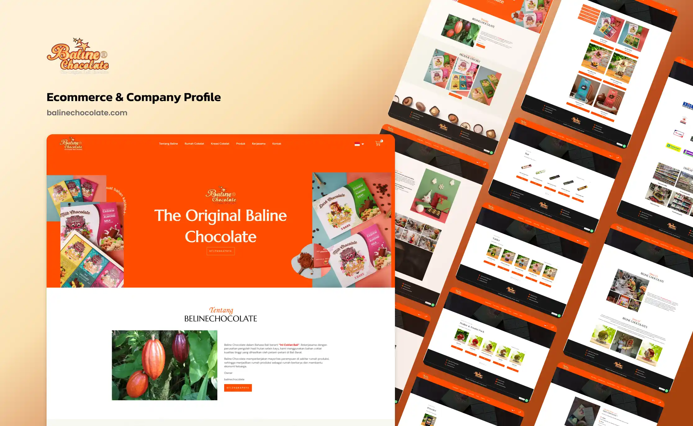

Bagaimana ornamen seni Bali seperti Barong, Legong, Wayang Kamasan, dan ragam tari tradisional bisa jadi fondasi identitas digital sebuah brand cokelat artisan lokal? Ini adalah studi kasus pengembangan web untuk Baline Chocolate, produsen asal Gianyar yang mau ekspansi ke pasar nasional.

Tampilan Antarmuka Platform Balinechocolate.com
Studi kasus ini mengulas proses digitalisasi usaha cokelat artisan Bali lewat pengembangan platform niaga elektronik yang menggabungkan profil perusahaan dan toko daring dalam satu ekosistem digital. Fokusnya adalah Baline Chocolate, produsen cokelat artisan asal Gianyar yang nama brandnya berakar dari bahasa Bali, bermakna "Ini Coklat Bali". Ada tiga masalah utama yang diidentifikasi: ketergantungan pada saluran distribusi luring, belum ada narasi kultural autentik di medium digital, dan alur transaksi yang belum terintegrasi. Solusinya dibangun dengan pendekatan Human-Centered Design menggunakan WordPress dan WooCommerce, dengan ornamen seni Bali seperti Barong, figur Legong, gaya ilustrasi Wayang Kamasan, dan motif tari tradisional sebagai elemen inti identitas kemasan dan antarmuka digitalnya. Hasilnya: konsistensi visual antara kemasan fisik dan platform digital jadi kunci dalam membangun kepercayaan konsumen sekaligus mendorong ekspansi merek ke pasar nasional.
Kabupaten Gianyar dikenal sebagai pusat kebudayaan dan kesenian Bali. Tapi di balik reputasi itu, wilayah ini juga punya potensi agrikultur yang signifikan: perkebunan kakao yang menghasilkan biji berkualitas tinggi sebagai bahan baku industri cokelat artisan. Komoditas ini potensial menjadi produk unggulan ekspor kreatif apabila didukung oleh narasi merek dan kanal distribusi yang tepat.
Industri cokelat artisan di Indonesia tumbuh signifikan seiring meningkatnya kesadaran konsumen terhadap produk bean-to-bar berkualitas lokal. Data Kementerian Perindustrian mencatat sektor industri makanan olahan berbasis kakao tumbuh rata-rata 7,8% per tahun dalam periode 2019 hingga 2022. Pertumbuhan ini menciptakan peluang sekaligus tekanan kompetitif bagi produsen skala UMKM yang belum punya kehadiran digital yang kuat.
Di tengah kondisi itu, penetrasi internet Indonesia yang sudah melampaui 78% pada tahun 2022 jelas membuka peluang nyata bagi UMKM untuk menjangkau konsumen di luar batas geografis lokalnya. Tapi kehadiran digital saja tidak cukup. Perlu platform yang mampu merepresentasikan nilai autentik produk lokal secara visual dan naratif.
Pertanyaan intinya: bagaimana identitas visual kultural Bali yang kaya, mulai dari figur Barong, tari Legong, gaya ilustrasi Wayang Kamasan, sampai motif tari tradisional lainnya, bisa diterjemahkan ke dalam desain kemasan dan antarmuka digital untuk membangun ekuitas merek yang otentik dan mendorong ekspansi pasar nasional?
Nama Baline Chocolate bukan sekadar label komersial. Dalam bahasa Bali, kata baline berarti "ini milik Bali", atau lebih lugas: "Ini Coklat Bali". Pilihan nama ini adalah deklarasi identitas yang tegas. Produk ini lahir dari tanah Bali, tumbuh bersama petani lokal Gianyar, dan membawa kekayaan kultural pulau tersebut dalam setiap batang cokelatnya.
Baline Chocolate menjalin kemitraan langsung dengan pengolah biji kakao lokal di Gianyar, menempuh rantai produksi yang pendek dan transparan. Filosofi farm-to-bar ini menjadikan cokelat Baline bukan sekadar produk pangan, tapi sebuah medium penceritaan tentang dedikasi petani, tanah Bali, dan warisan seni visualnya.
Bali punya tradisi seni visual yang telah berumur berabad-abad. Gaya lukisan Wayang Kamasan, yang berasal dari desa Kamasan di Klungkung, menggunakan warna-warna alam dan figur-figur ikonik dari epos Mahabharata dan Ramayana dengan komposisi yang sangat khas. Tari Legong dengan kostumnya yang gemerlap emas, serta figur Barong sebagai penjelmaan kekuatan pelindung dalam kosmologi Bali, telah menjadi simbol yang dikenali secara universal.
Dalam konteks branding produk artisan, simbol-simbol visual ini punya kekuatan yang jauh melampaui dekorasi semata. Mereka berfungsi sebagai cultural signifier: penanda yang mengkomunikasikan asal-usul, nilai, dan janji kualitas sebuah produk tanpa perlu satu kata pun.
Dari analisis kondisi awal Baline Chocolate, ada tiga hambatan struktural yang membatasi potensi pertumbuhan merek secara digital:
Penjualan awal Baline Chocolate bertumpu sepenuhnya pada toko fisik dan jaringan distributor di kawasan pariwisata Bali. Model ini membatasi jangkauan konsumen hanya pada wisatawan yang hadir secara fisik di Bali dan reseller lokal. Pergeseran perilaku konsumen pascapandemi menuju transaksi digital membuat model luring semata jadi hambatan serius bagi skalabilitas usaha.
Kekuatan utama Baline Chocolate ada pada kisah di balik produknya: petani lokal Gianyar, proses farm-to-bar, dan warisan seni Bali yang tertanam dalam desain kemasan. Media sosial sebagai satu-satunya medium digital terbukti tidak memadai untuk menampung kedalaman narasi tersebut, mengelola katalog produk secara terstruktur, dan membangun kepercayaan konsumen dalam satu alur pengalaman yang kohesif.
Desain kemasan fisik Baline Chocolate sudah menampilkan motif seni Bali. Tapi representasi visual itu belum diterjemahkan secara konsisten ke medium digital. Akibatnya terjadi brand dissonance: konsumen yang menemukan produk secara daring mendapatkan pengalaman visual yang terputus dari kekayaan identitas kultural yang ada di kemasan fisiknya.
Pengembangan platform Baline Chocolate menggunakan pendekatan Human-Centered Design yang menempatkan pengalaman konsumen akhir sebagai pusat setiap keputusan desain. Proses pengembangan dibagi ke dalam empat fase yang saling berurutan.
Fase awal mencakup wawancara dengan pemilik usaha untuk memahami nilai merek dan aspirasi ekspansi, analisis kompetitif terhadap platform cokelat artisan nasional dan internasional, serta inventarisasi aset visual kultural Bali yang relevan. Keluaran fase ini adalah brand brief visual yang memetakan elemen seni Bali yang akan diintegrasikan ke dalam antarmuka digital.
Penerjemahan identitas kultural dari kemasan fisik ke antarmuka digital dilakukan melalui pembuatan panduan gaya visual yang mendefinisikan palet warna, hierarki tipografi, dan tata cara penggunaan ornamen Bali dalam konteks layar. Figma digunakan untuk menghasilkan prototipe interaktif resolusi tinggi sebelum pengembangan dimulai, memastikan konsistensi visual antara kemasan produk dan pengalaman digital.
Platform dibangun di atas WordPress dengan ekstensi WooCommerce sebagai tulang punggung sistem niaga elektronik. Implementasi mencakup arsitektur halaman hybrid, sistem manajemen produk dengan atribut lengkap, konfigurasi gerbang pembayaran, integrasi kalkulasi ongkos kirim otomatis, serta optimasi aset visual menggunakan teknik lazy loading untuk menjaga kecepatan muat halaman.
Pengujian dilakukan pada tiga dimensi: fungsionalitas sistem transaksi menggunakan metode black-box testing, performa teknis lewat Google PageSpeed Insights, serta konsistensi representasi identitas visual kultural pada berbagai ukuran layar dan perangkat. Umpan balik dari iterasi pengujian dipakai untuk penyempurnaan sebelum peluncuran resmi.
Platform Balinechocolate.com dirancang sebagai situs web hybrid yang menggabungkan fungsi profil perusahaan dengan sistem niaga elektronik penuh dalam satu domain terpadu. Struktur navigasinya dibuat dengan hierarki konten yang jelas: pengunjung pertama kali disambut oleh narasi merek dan kisah perkebunan kakao sebelum diarahkan ke katalog produk. Alur ini membangun kepercayaan dulu sebelum mendorong konversi.
Arsitektur halaman terdiri dari beberapa lapisan informasi yang saling melengkapi: Beranda sebagai pintu masuk naratif, Tentang Baline yang mengisahkan filosofi dan kemitraan petani lokal, Rumah Cokelat sebagai showcase proses produksi, Kreasi Cokelat untuk eksplorasi produk premium, serta halaman Produk sebagai ruang transaksi utama.
Ini adalah dimensi paling kritis dari seluruh proyek: bagaimana kekayaan seni visual Bali yang sudah diwujudkan dalam kemasan fisik produk Baline Chocolate bisa diterjemahkan ke medium digital dengan konsistensi dan kedalaman yang sama. Ada empat sumber ikonografi utama yang dipilih sebagai fondasi sistem visual merek.
Figur Barong sebagai manifestasi kekuatan pelindung dalam kosmologi Bali digunakan sebagai motif utama pada edisi kemasan premium. Sosok Barong dengan mahkota emas dan raut wajah yang khas ditampilkan dalam gaya ilustrasi modern yang tetap menghormati proporsi dan detail tradisionalnya.
Penari Legong dengan kostum prada keemasan jadi ikon feminin yang merepresentasikan keanggunan produk cokelat artisan. Gestur tangan dan postur tari yang khas dikonversikan menjadi elemen grafis siluet pada kemasan tipe susu dan cokelat putih.
Gaya ilustrasi Wayang Kamasan dari desa Kamasan, Klungkung, dengan karakteristik warna bumi seperti oker, sienna, dan merah terra, serta komposisi figur menghadap ke samping, diadaptasi untuk panel narasi di sisi kemasan. Gaya ini menceritakan kisah asal-usul kakao dalam bahasa visual leluhur Bali.
Ornamen dari ragam tari Bali lainnya seperti Kecak, Pendet, dan Baris digunakan sebagai elemen dekoratif berulang pada pita kemasan dan latar belakang antarmuka digital. Motif-motif ini memberikan kekayaan visual tanpa mendominasi, menjaga keseimbangan antara kehadiran kultural dan keterbacaan informasi produk.
Pada antarmuka digital, ornamen-ornamen kultural ini hadir dalam tiga bentuk: sebagai elemen hero di banner utama beranda, sebagai pemisah seksi di antara blok konten dengan motif berulang berskala kecil, dan sebagai latar tekstur halus di area produk. Hasilnya adalah pengalaman visual yang kaya tanpa mengorbankan keterbacaan konten dan kecepatan muat halaman.
Konsistensi antara kemasan fisik dan antarmuka digital inilah yang jadi titik diferensiasi terkuat platform ini. Ketika konsumen yang pertama kali menemukan produk secara daring kemudian mengunjungi situs web, mereka mengalami kesinambungan visual yang memperkuat persepsi keaslian dan kualitas. Ini yang dalam manajemen merek disebut sebagai brand touchpoint consistency.
Palet warna antarmuka digital dipimpin oleh oranye hangat yang dipilih secara strategis untuk merepresentasikan dua hal sekaligus: kehangatan dan antusiasme sebagai nilai merek, serta rona alami buah kakao yang matang. Warna ini dipasangkan dengan latar krem bersih dan aksen cokelat tua, menciptakan hierarki visual yang mengarahkan mata konsumen secara natural dari narasi menuju tombol call-to-action.
Tata letak etalase digital menggunakan sistem grid tiga kolom yang menonjolkan fotografi kemasan produk beresolusi tinggi. Setiap kartu produk dilengkapi informasi harga, varian rasa, dan tombol Tambahkan ke Keranjang yang bisa diakses langsung tanpa harus masuk ke halaman detail, meminimalkan friksi dalam proses pembelian.
Bagian narasi perusahaan diposisikan menggunakan tata letak layar terbagi: sisi kiri menampilkan foto perkebunan dan proses produksi yang autentik, sisi kanan memuat teks naratif tentang kemitraan dengan petani lokal Gianyar. Pendekatan ini membangun kepercayaan lewat transparansi proses produksi sambil mempertegas komitmen merek terhadap komunitas lokal.
Fondasi teknis platform dibangun di atas WordPress dengan ekstensi WooCommerce yang dikonfigurasi secara komprehensif. Implementasi sistem transaksi mencakup arsitektur keranjang belanja yang responsif, sinkronisasi manajemen inventaris real-time, kalkulasi ongkos kirim otomatis berbasis API JNE dan Pos Indonesia, serta integrasi gerbang pembayaran yang mendukung transfer bank, kartu kredit, dan dompet digital.
Tantangan performa dari katalog produk berbasis fotografi beresolusi tinggi diatasi lewat teknik lazy loading pada seluruh aset visual. Gambar hanya dimuat ketika pengguna menggulir layar ke arah area tersebut, yang secara signifikan mengurangi waktu muat halaman utama. Selain itu, seluruh gambar produk dikompresi ke format WebP untuk meminimalkan ukuran file tanpa kompromi kualitas visual.
Platform juga diimplementasikan secara bilingual dalam Bahasa Indonesia dan Bahasa Inggris, untuk mengakomodasi segmen wisatawan mancanegara sekaligus membuka kemungkinan ekspansi ke pasar internasional di masa mendatang.
Dampak kehadiran platform digital Baline Chocolate tidak berhenti di efisiensi operasional. Pada dimensi yang lebih strategis, platform ini jadi fondasi konkret bagi ekspansi merek yang terencana: mengubah Baline Chocolate dari produk oleh-oleh lokal menjadi merek cokelat artisan yang dikenal di skala nasional.
Sebelum hadir secara digital, konsumen Baline Chocolate secara praktis harus berada di Bali untuk bisa membeli produknya. Platform niaga elektronik menghapus batasan geografis itu secara fundamental. Konsumen dari Jakarta, Surabaya, Medan, atau kota-kota lain di seluruh Indonesia kini bisa mengakses, memilih, dan memesan produk langsung kepada produsen tanpa perantara, dengan sistem pengiriman yang sudah terintegrasi.
Lebih dari sekadar perluasan kanal penjualan, ini adalah ekspansi narasi merek. Setiap konsumen di luar Bali yang mengunjungi platform, membaca kisah petani kakao Gianyar, melihat ilustrasi Wayang Kamasan pada kemasan, atau memahami filosofi di balik nama "Baline", mereka menjadi bagian dari komunitas merek yang lebih luas, terlepas dari lokasi geografisnya.
Dalam pasar cokelat artisan yang semakin ramai, identitas kultural yang autentik jadi moat kompetitif yang sulit ditiru. Merek dari luar Bali tidak bisa dengan mudah mengklaim warisan visual Barong, Legong, atau Wayang Kamasan dengan kredibilitas yang sama. Konsistensi antara identitas visual pada kemasan fisik dan antarmuka digital Baline Chocolate memperkuat narasi keaslian ini secara berlapis.
Implementasi identitas kultural pada platform digital juga membuka peluang kemitraan dengan agen wisata, hotel butik, dan gift shop premium. Segmen ini secara aktif mencari produk oleh-oleh beridentitas kultural kuat untuk ditawarkan kepada tamu mereka.
Arsitektur platform yang dibangun sejak awal dengan mempertimbangkan skalabilitas memungkinkan penambahan fitur dan konten secara bertahap tanpa perancangan ulang. Halaman Kerjasama pada platform secara aktif membuka pintu bagi calon mitra distribusi, reseller, dan peluang kerja sama dengan hotel, maskapai, serta korporasi yang membutuhkan produk corporate gift berlabel kultural Bali.
Dalam jangka panjang, platform ini juga meletakkan fondasi bagi strategi ekspansi internasional. Antarmuka bilingual yang sudah tersedia, didukung narasi merek yang dibangun dengan standar storytelling internasional, menjadikan Baline Chocolate siap menjajaki pasar ekspor ke negara-negara dengan komunitas diaspora Indonesia yang besar maupun pasar yang apresiasi terhadap produk artisan Asia Tenggara.
Konsumen dari seluruh Indonesia bisa bertransaksi langsung, mengubah model penjualan dari lokal ke nasional tanpa investasi infrastruktur fisik tambahan.
Integrasi Barong, Legong, Wayang Kamasan, dan motif tari Bali membangun ekuitas merek yang autentik dan sulit ditiru kompetitor dari luar Bali.
Otomasi manajemen pesanan, inventaris, dan kalkulasi pengiriman mengurangi beban administratif dan memungkinkan tim fokus pada kualitas produksi.
Halaman Kerjasama yang terstruktur pada platform membuka jalur aktif untuk kemitraan dengan hotel, agen wisata, maskapai, serta peluang pasar corporate gift berskala besar.
Antarmuka bilingual Indonesia dan Inggris, bersama narasi merek berkelas internasional, meletakkan fondasi konkret bagi ekspansi ke pasar ekspor di masa mendatang.
Proyek ini menunjukkan bahwa digitalisasi UMKM artisan yang efektif bukan cuma soal teknologi, tapi soal identitas. Platform Baline Chocolate membuktikan bahwa ketika identitas visual kultural yang autentik, mulai dari Barong, Legong, Wayang Kamasan, hingga motif tari tradisional Bali, diterjemahkan secara konsisten dari kemasan fisik ke antarmuka digital, hasilnya bukan sekadar toko daring biasa. Ia menjadi sebuah brand world yang imersif: ruang digital di mana konsumen tidak hanya membeli cokelat, tapi mengalami Bali.
Dalam ekonomi digital yang semakin jenuh dengan produk generik, keautentikan kultural adalah aset bisnis yang paling sulit ditiru dan paling berharga untuk dibangun. Bagi UMKM berbasis kearifan lokal, identitas budaya bukan sekadar ornamen, melainkan strategi ekspansi merek yang paling fundamental.
Sebagai rekomendasi ke depan, ada tiga inisiatif yang bisa diprioritaskan: pertama, pengembangan fitur virtual chocolate experience yang memungkinkan konsumen menjelajahi proses produksi dari perkebunan hingga batang cokelat lewat konten video terintegrasi. Kedua, integrasi program loyalitas digital yang menghubungkan pembelian berulang dengan akses konten kultural eksklusif tentang seni Bali. Ketiga, ekspansi repertoar visual kultural dengan menggandeng seniman Bali secara langsung untuk menghasilkan ilustrasi edisi terbatas yang memperkuat posisi Baline Chocolate sebagai merek yang aktif melestarikan ekosistem seni lokal.